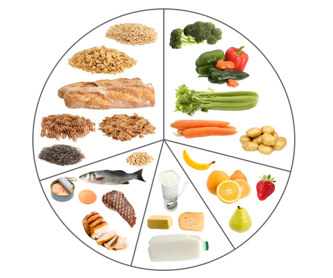

Welcome to our diet counseling service! We provide personalized guidance and support to help you achieve your health and nutrition goals.
Our experienced counselors will work with you to create a customized meal plan that fits your lifestyle and dietary preferences. Whether you're looking to lose weight, improve your energy levels, or simply adopt healthier eating habits, we're here to help you every step of the way.
Get started today and take the first step towards a healthier, happier you!
Diet Recommendations for All Age Groups
- Infants (0-12 months): Breast milk or formula, introduce solid foods around 6 months.
- Toddlers (1-3 years): Balanced meals with fruits, vegetables, whole grains, lean proteins, and healthy fats.
- Children (4-8 years): Varied diet with emphasis on fruits, vegetables, whole grains, lean proteins, and dairy. 
- Adolescents (9-18 years): Balanced meals with increased nutrient needs, emphasizing calcium, iron, and vitamin D.
- Adults (19-50 years): Balanced diet with emphasis on fruits, vegetables, whole grains, lean proteins, and healthy fats.
- Older Adults (51+ years): Nutrient-rich diet with emphasis on calcium, vitamin D, and fiber, and adequate hydration.